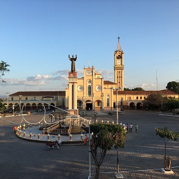

Juazeiro do Norte - CE
Terra do Padre Cícero
Não Deixe de Visitar
Estátua de Padre Cícero
A construção da estátua aconteceu por um acaso. Em 1967, ano em que assumiu a Prefeitura de Juazeiro do Norte, o médico Mauro Sampaio mandou derrubar o chamado “pé de tambor”, uma árvore de Timbaúba, para construir uma antena de televisão. Porém, os devotos do Padre Cícero ficaram revoltados, pois, segundo a tradição oral, a árvore era um dos locais de meditação e refúgio do sacerdote.
Antes disso, no final do século XIX, já com suas ordens religiosas suspensas após o “Milagre da Hóstia” - controverso evento em que, ao dar eucaristia a uma fiel, o pão consagrado por Padre Cícero teria se transformado em sangue na boca da beata -, o aclamado santo popular já frequentava a Colina do Horto, antigamente chamada de “Serra do Catolé”. Lá, fazia seu retiro espiritual e iniciou a construção de uma igreja para Bom Jesus do Horto.
O projeto foi abandonado em 1904 por ordens da Diocese de Fortaleza. A edificação, de forma natural, foi ruindo até ser demolida no final da década de 1930. “Então, já havia sido profanado outro símbolo de fé”, conta a historiadora e pesquisadora Amanda Teixeira.
Endereço:Rodovia Padre Cícero - Horto, Juazeiro do Norte - CE
Basílica de Nossa Senhora das Dores
Localizado em Juazeiro do Norte (CE), o Santuário Diocesano de Nossa Senhora das Dores foi a igreja onde o Padre Cícero Romão Baptista (Padre Cícero) pôde exercer o seu sacerdócio, de 1872 até 1892, quando foi suspenso de ordem. É um importante cartão postal da cidade.
Pode-se afirmar que a cidade de Juazeiro do Norte teve início como fruto da devoção à Nossa Senhora das Dores, antes mesmo da propagação da devoção popular ao Padre Cícero. Em dias de grande festa em Juazeiro do Norte, a primeira romaria do ciclo acontece durante a festa de Nossa Senhora das Dores, padroeira da cidade.
Aproximadamente 400 mil romeiros fazem a festa acontecer na Basílica Santuário de Nossa Senhora das Dores (antiga igreja matriz de Juazeiro), além de outros importantes lugares que compõem o itinerário dos romeiros.
A igreja, conhecida pelos devotos como Santuário Mãe da Dores foi elevada a Santuário no ano de 2003 e, em 2008, à condição de Basílica Menor. É palco de importante fluxo de romeiros, que chegam principalmente dos mais diversos Estados do nordeste do Brasil, durante todo o ano.
Endereço:Rua Padre Cícero, 147 - Centro, Juazeiro do Norte - CE
Basílica de São Francisco

Construída no meio do mato, próxima à estação ferroviária, o local foi uma roça de mandioca e um pequeno campo de futebol. O terreno, que pertenceu ao Padre Cícero, foi doado à Diocese de Crato, que repassou aos capuchinhos. Segundo frei Raimundo Barbosa, atual pároco da Igreja, a vinda dos frades, em 1949, e a construção do Santuário foi uma forma de a Igreja combater o milagre de Juazeiro.
"Dom Francisco de Assis Pires teve a ideia de chamar os capuchinhos para se instalar em Juazeiro do Norte a fim de criar a devoção por São Francisco e, de certa forma, abafar a atuação do Padre Cícero. Hoje, a realidade mostra que eles implantaram, mas Padre Cícero continuou amado e querido pelos romeiros", conta o frade.
No dia da inauguração da pedra fundamental, em 6 de janeiro de 1950, o vigário da Igreja Matriz de Nossa Senhora das Dores, o Monsenhor Juviniano Barreto, foi assassinado a facadas durante o evento. Apesar da fatalidade, a obra seguiu até ser concluída e celebrada exatos seis anos depois. "Chamaram os capuchinhos de loucos porque iam construir um monumento desses no meio do mato", acredita frei Barbosa.
Endereço:Praça Mons. Joviniano Barreto, s/n - Franciscanos, Juazeiro do Norte - CE
Centro de Cultura Popular Mestre Noza
No centro de Juazeiro do Norte – CE há um casarão que um dia pertenceu à Polícia Militar Cearense, mas que agora floresce de cores e formas ao abrigar o Centro de Cultura Popular Mestre Noza. Pequenas salas ao redor de um pátio concentram o que há de mais tradicional na cultura artesanal cearense e nordestina.
Nomeado em homenagem ao falecido xilogravurista Mestre Noza, o Centro de Cultura Popular tem como objetivo concentrar o artesanato da região para impulsionar sua divulgação e venda. Funcionando desde 1983, o Centro é uma cooperativa com mais de 100 artesãos cadastrados com trabalhos variados, desde madeira, barro e ferro, até fibras naturais e material reciclado.
Endereço:R. São Luiz, 93 - Centro, Juazeiro do Norte - CE
Centro Cultural Banco do Nordeste
O Centro Cultural Banco do Nordeste (CCBNB) é uma ação concreta da política de Desenvolvimento do Banco do Nordeste. O primeiro equipamento foi inaugurado em julho de 1998, em Fortaleza, o segundo, localizado em Juazeiro do Norte e com uma atuação regional no Cariri, iniciou seu funcionamento em 04 de abril de 2006 e o terceiro, instalado na cidade de Sousa-PB em 25 de junho de 2007, atuando na região do Alto Sertão Paraibano. Desta forma, o CCBNB tem se firmado no cenário cultural Nordestino como um espaço onde é permitido experimentar a diversidade de conceitos, estilos e suportes, oferecidos em sua programação. Isto significa trabalhar cada Programa relacionando-o a um contexto mais amplo, estabelecendo pontes entre saberes e transformando-se em um lugar de encontro dos vários públicos para usufruir e refletir sobre arte e cultura.
O CCBNB oferece a seus visitantes uma variada programação diária e gratuita, enquanto dedica-se a formar um público crítico. Tendo como princípio que uma ação cultural efetiva é resultado do diálogo com os artistas, com as comunidades e o público em geral, o Centro Cultural Banco do Nordeste trabalha sua programação a partir de um edital anual onde recebe propostas de artistas nas áreas de cinema, artes visuais, música, artes cênicas, literatura, história, patrimônio e atividades infantis.
Nos espaços do Centro Cultural Banco do Nordeste o público descobre o prazer de conhecer e apreciar a arte e a cultura: do Nordeste, do Brasil e do Mundo.
Endereço:R. São Pedro, 337 - Centro, Juazeiro do Norte - CE, 63010-010